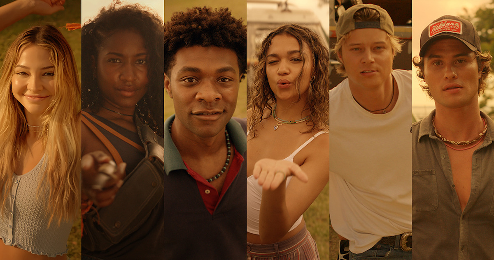

Page Index
Looking for a specific page? You can select one here!
Outer Banks; Character Summary
All rights in regards to the information goes to Netflix and the show's writers.

Looking for more information about each character? Go ahead and click their name! It'll take you directly to a wiki on the character.